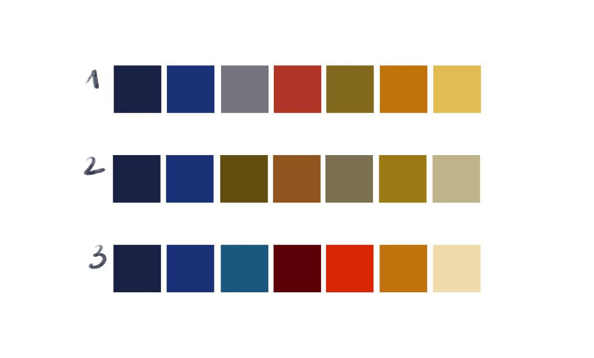
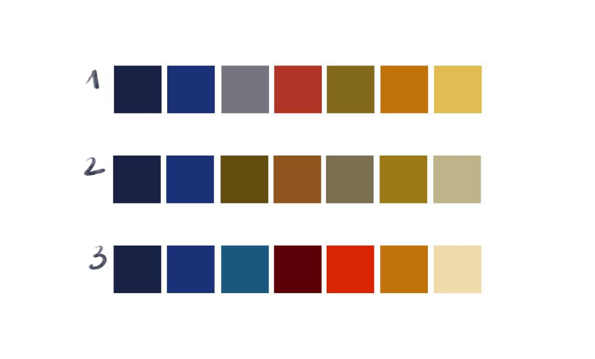

Дата: 2025-05-12
Ко второй аттестации были выполнены задания:
Дата: 2025-03-17
К моменту первой аттекстации во втором семестре количество людей, занимающихся проектом, значительно возрасло. Команда разработки стала насчитывать уже 12 человек.
Произошел необходимый переезд на GitLab. Благодаря этому стал удобнее контроль версий, разделение задач и распределение их между участниками.
При использовании GitLab нам стал доступен Task Board. С его помощью можно быстро сформировать данный журнал.

В итоге мы знаем, что к первой аттестации были подготовлены:
Дата: 2025-09-15
Первую версию проекта запустили учащиеся 3-его и 4-ого курсов. Была придумана основаная идея, выбран основной стек для разрабоки, поставлены задачи на первый семестр.

Во время первого семестра команда разработки составляла всего 6 человек.
Важной частью проработки проекта в первом семестре можно выделить работу дизайнера. Были проработаны первые концепты стилистики первонажей и цветовой плитры для игры.

 
